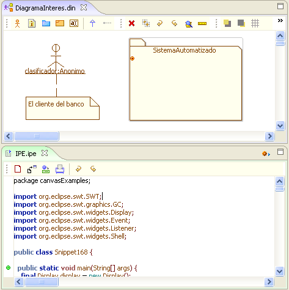
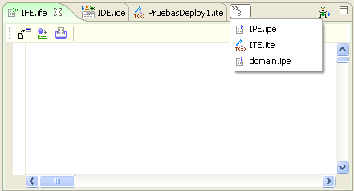

|
Marco de Expresión |
|
Este marco es creado bajo dos perpectivas, la del Marco de Modelado Artístico que hace un simil con la expresión en la pintura junto con las artes gráficas, y el Marco de Desarrollo Ingenieril creado bajo el concepto de las artes literarias. Bajo estos dos marcos se alojan todos los plugins y componentes que se expresan como elementos gráficos o como desarrollo mediante una interfaz de texto. 
Estos dos marcos trabajan bajo el concepto de pestañas, lo que permiten utilizar diferentes diagramas y entornos simultaneamente. De manera similar al Marco de Exposición, un elemento es agregado en la parte superior de cada marco cuando la cantidad de pestañas abiertas supera la dimension del marco. Mediante esta se puede ver cuantas están ocultas y acceder a ellas. 
|